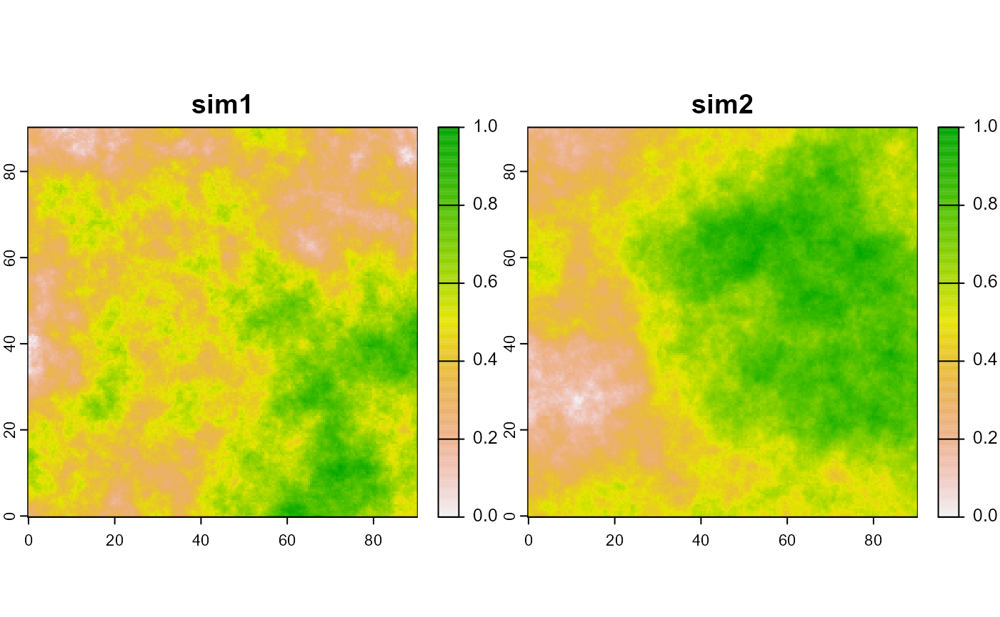
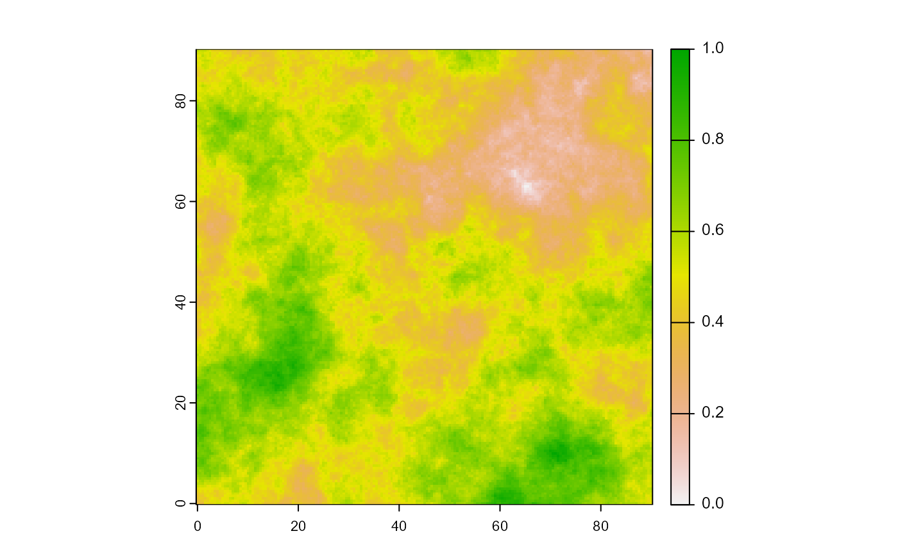

Simulate virtual environment
simulate-virtual-environment.Rmd
library(simtools)Create the grid
Create the grid structuring the virtual environment. By default, the function creates a grid spanning 0 to 90° in both longitude and latitude, with steps of 0.5.
grid <- create_grid()Generating environmental layers
The function creates several environmental layers using Gaussian simulation from the grid locations. The number of layers generated is set by n. The generated layers can be normalised, and be returned either only as data frame or both in data frame and raster formats (SpatRast).
grid <- create_grid()
str(generate_env_layer(norm = FALSE, return_rasters = FALSE, grid = grid))
#> [using unconditional Gaussian simulation]
#> 'data.frame': 32761 obs. of 4 variables:
#> $ x : num 0 0.5 1 1.5 2 2.5 3 3.5 4 4.5 ...
#> $ y : num 0 0 0 0 0 0 0 0 0 0 ...
#> $ sim1: num 4.71 5.35 4.81 7.42 6.74 ...
#> $ sim2: num -0.377 -0.575 -0.766 -3.876 -4.276 ...
str(generate_env_layer(norm = TRUE, return_rasters = FALSE, grid = grid))
#> [using unconditional Gaussian simulation]
#> 'data.frame': 32761 obs. of 4 variables:
#> $ x : num 0 0.5 1 1.5 2 2.5 3 3.5 4 4.5 ...
#> $ y : num 0 0 0 0 0 0 0 0 0 0 ...
#> $ sim1: num 0.213 0.234 0.217 0.301 0.279 ...
#> $ sim2: num 0.455 0.45 0.445 0.367 0.357 ...
library(terra)
#> terra 1.7.18
plot(generate_env_layer(norm = TRUE, return_rasters = TRUE, grid = grid)$rasters)
#> [using unconditional Gaussian simulation]
plot(generate_env_layer(norm = FALSE, return_rasters = TRUE, grid = grid)$rasters)
#> [using unconditional Gaussian simulation]Build the suitability layer
The function permits building a suitability layer from a set of environmental layers and beta parameters to be leveraged with. It mimics a basic resource selection function, where a given environmental layer is simply scaled by the beta parameter (env*beta) and several leveraged env layers are additively combined. For more elaborate procedures, see the package .
library(terra)
# simple example
grid <- create_grid()
cdt <- generate_env_layer(grid = grid)
#> [using unconditional Gaussian simulation]
rsce <- generate_resource_layer(env_layers = cdt$rasters,
beta = c(2, -1.5))
str(rsce)
#> List of 2
#> $ dataframe:'data.frame': 32761 obs. of 3 variables:
#> ..$ x : num [1:32761] 0 0.5 1 1.5 2 2.5 3 3.5 4 4.5 ...
#> ..$ y : num [1:32761] 90 90 90 90 90 90 90 90 90 90 ...
#> ..$ suitability: num [1:32761] 0.566 0.546 0.56 0.554 0.527 ...
#> $ rasters :S4 class 'SpatRaster' [package "terra"]
plot(rsce$rasters)
# also works when coordinates are not names x,y
cdt2 <- generate_env_layer(grid = grid, n = 3)$dataframe |> dplyr::rename(lon = x, lat = y)
#> [using unconditional Gaussian simulation]
str(generate_resource_layer(env_layers = cdt2, coordinate_fields = c("lon", "lat"),
beta = c(2, -1.5, 3)) )
#> List of 2
#> $ dataframe:'data.frame': 32761 obs. of 3 variables:
#> ..$ lon : num [1:32761] 0 0.5 1 1.5 2 2.5 3 3.5 4 4.5 ...
#> ..$ lat : num [1:32761] 0 0 0 0 0 0 0 0 0 0 ...
#> ..$ suitability: num [1:32761] 0.389 0.346 0.37 0.328 0.324 ...
#> $ rasters :S4 class 'SpatRaster' [package "terra"]